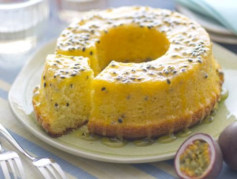

bolo maracuja
The bolo de maracuja is a Brazilian recipe prepared with maracuja, which we commonly call passion fruit. It is a bole, or a cake, usually in the shape of a donut, with the juice of the passion fruit in the mixture and then completed with a syrup always based on the same fruit. The result is a very simple yet refined dessert, a greedy way to bring an explosion of tropical taste to the table;)